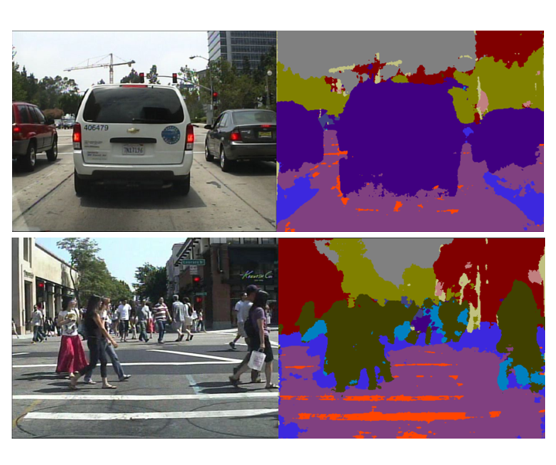

|
Tianrui Liu
I am now a Lecturer at the Department of Computer Science, National University of Defense Technology (NUDT).
Before, I was a Postdoc Resesarcher in the BioMediIA @Imperial College London (advised by Professor Daniel Rueckert and Dr. Bernhard Kainz.
I'm interested in computer vision, deep learning, object detection and pattern recognition, image and video processing and medical image analysis.
In my spare time, I like playing piano, reading and playing badminton.
Email /
CV /
Google Scholar /
LinkedIn
|

|
|
Education
-
Ph.D in Computer Vision and Image Processing, Imperial College London
Nov. 2015 - Nov. 2019
-
M.Phil. in Image and Video Processing, University of Hong Kong
Sep. 2013 - Nov. 2015
-
B.Eng. in Electronic Information Engineering, Hong Kong Polytechnic University
Sep. 2011 - Jun. 2013
-
B.Eng. in Microelectronics, San Yat-Sen University
Sep. 2009 - Jun. 2011
|
|
Working Experience / Activities
|
For a complete list, please check my Google Scholar.
|
|
Coupled-Network for Robust Pedestrian Detection with Gated Multi-Layer Feature Extraction and Deformable Occlusion Handling
Tianrui Liu*,
Wenhan Luo,
Lin Ma,
Junjie Huang,
Tania Stathaki,
Tianhong Dai,
arxiv Preprint, 2020
pdf /
bibtex
In this paper, we propose a gated multi-layer convolutional feature extraction method which can adaptively generate discriminative features for candidate pedestrian regions.
|
|
|
Ultrasound Video Summarization using Deep Reinforcement Learning
Tianrui Liu,
Qingjie Meng,
Athanasios Vlontzos,
Jeremy Tan,
Daniel Rueckert,
Bernhard Kainz
International Conference on Medical Image Computing and Computer Assisted Intervention (MICCAI), 2020
pdf /
bibtex
We propose an ultrasound video summarization method to summarize the long examination videos. The proposed method can remove parts that are not relevant for diagnostics and meanwhile guarantees the preservation of decisive diagnostic information.
|
|
|
Gated Multi-layer Convolutional Feature Extraction Network for Robust Pedestrian Detection
Tianrui Liu,
Jun-Jie Huang,
Tianhong Dai,
Guangyu Ren,
Tania Stathaki
International Conference on Acoustics, Speech, and Signal Processing (ICASSP), 2020
pdf /
bibtex
In this paper, we propose a gated multi-layer convolutional feature extraction method which can adaptively generate discriminative features for candidate pedestrian regions.
|
|
|
SAM-RCNN: Scale-Aware Multi-Resolution Multi-Channel Pedestrian Detection
Tianrui Liu,
Mohamed ElMikaty,
Tania Stathaki
British Machine Vision Conference (BMVC), 2019
pdf /
bibtex
We exploits different combination of multi-resolution CNN features for pedestrian candidates of different scales.
|
|
|
SRHRF+: Self-Example Enhanced Single Image Super-Resolution Using Hierarchical Random Forests
Jun-jie Huang,
Tianrui Liu,
Pier Luigi Dragotti,
Tania Stathaki,
IEEE Conference on Computer Vision and Pattern Recognition (CVPR) Workshop, 2017
pdf /
bibtex
We introduce CapsPix2Pix, which combines convolutional capsules with the pix2pix framework, to synthesise images conditioned on class segmentation labels. We apply our approach to a new biomedical dataset of cortical axons imaged by two-photon microscopy, as a method of data augmentation for small datasets.
|
|

|
Faster R-CNN for robust pedestrian detection using semantic segmentation network
Tianrui Liu,
Frontiers in Neurorobotics, 2018
pdf /
bibtex
We formulate tracking as a reinforcement learning problem, and apply deep reinforcement learning techniques with a continuous action space to learn how to track at the subpixel level.
|
|
Selected Awards
-
Imperial College Department Scholarship (£130,000), Imperial College London
Oct. 2017 - Apr. 2022 (Expected)
-
Dean's List of Outstanding Students, HKPolyU
Oct. 2015 - Sep. 2016
-
Outstanding Performance Scholarship (HK$ 80,000), HKSAR Government
Sep. 2013 - Jun. 2015
-
PolyU EIE (Non-local Student) Scholarship (HK$ 100,000), HKPolyU
Sep. 2011 - Jun. 2013
|
The original template of this page can be found from here.
|
|